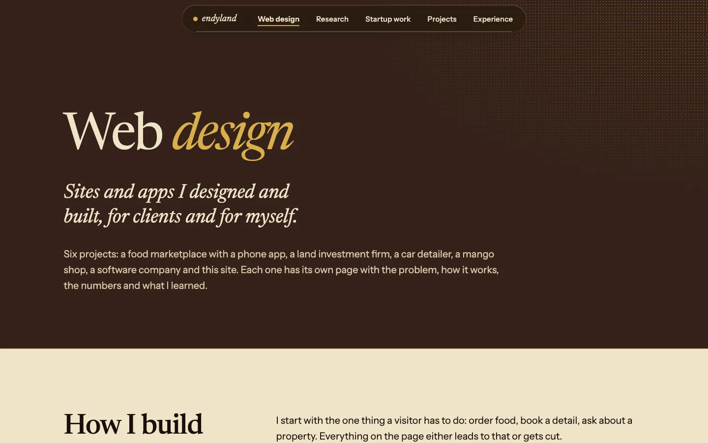
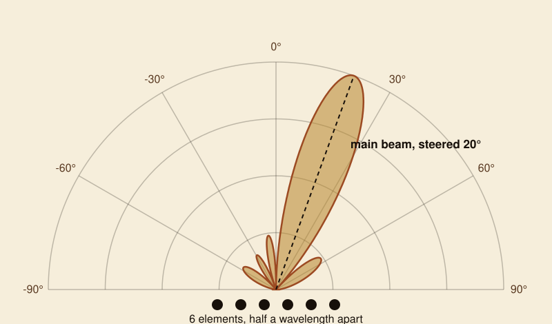
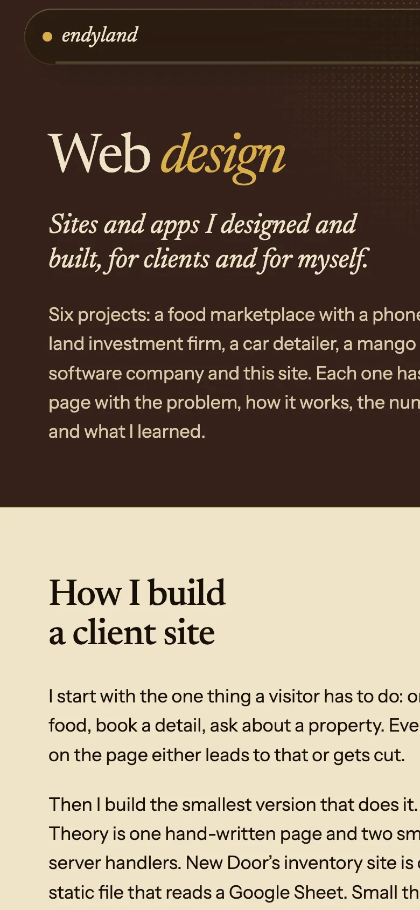

This site
endyland.com
This portfolio. A home page and five tabs, each with its own look, and a live 3D antenna beam.

The numbers
- 5tabs, each with its own art and motion
- 31project pages, one for every project
- 0build steps. The files are the site
- 36antenna elements in the home page beam
The problem
One long page made every project look the same size, and nothing on it showed how I build.
My work covers web design, research, two startups, hackathon and class projects, and jobs. The first version of this site put all of it on one scroll.
I wanted a site that sorts the work into rooms, gives every project room to explain itself, and is itself an example of how I build: small, fast, safe and easy to hand over.
Approach
- Five tabs and a page per project. Web design, Research, Startup work, Projects and Experience, with 31 project pages behind them. Old links such as
/#argusstill land in the right place. - No build step. Plain HTML, CSS and JavaScript. What is in the folder is what is served, so there is nothing to compile, and nothing to break between a change and the deploy.
- One shared frame. The top bar, footer, type scale and project layout live in a few shared files. Each tab and each branded project adds only its own look on top.
- Safe by default. A strict security policy with no inline scripts, and a check script that runs before every deploy.
How it works
From a change to the live site
- Edit the filesPlain HTML, CSS and JavaScript.
- Push to GitHubA pull request only runs the checks.
- Checks runBroken links, inline scripts, image sizes, security policy and more.
- Cloudflare PagesA push to the main branch deploys automatically.
The check script reads every page. It fails on a broken local link, a script written inline, a missing image size, a photo over 200 KB, a loosened security policy or an em dash. Pull requests never deploy.
The home page beam
The home page draws a 6 by 6 array of antenna elements as dots. A shader computes the beam on the GPU and steers it toward your pointer. The plot below is the same math for one row of six elements: the strength in each direction is the sum of the six waves, each delayed to point the beam where you want it.

Pages that draw on a canvas pause when they scroll off screen or the tab is hidden. They use a lower pixel ratio and fewer dots on phones. If the browser has no WebGL 2, the canvas is hidden and a plain CSS background takes its place. All text is real HTML, so nothing depends on the canvas.
Results
| What | Number |
|---|---|
| Tabs | 5, plus the home page |
| Project pages | 31 |
| Build steps | 0 |
| Largest allowed photo | 200 KB, WebP, checked on every push |
| Script sources allowed | This site, plus Cloudflare analytics |
| Inline scripts allowed | None |
The code is public on GitHub, so every claim here can be checked in the repository.
What I owned
- Designed and built the whole site in plain HTML, CSS and JavaScript.
- Wrote the home page beam in three.js, including the shader that steers it.
- Gave every tab its own look, and let each branded project page wear its client's colors and fonts.
- Built the shared top bar, the footer and the project page layout.
- Wrote the check script and set up the automatic deploy to Cloudflare Pages.
- Kept a strict security policy: no inline scripts and no outside script hosts.
What I learned
- A shared frame lets dozens of pages look different without drifting apart. When the top bar changed, it changed once.
- A check script is cheaper than remembering. Most mistakes it catches are small ones, like a missing image size, and they are the ones people forget.
- Decoration needs a budget. Canvases that pause off screen and run lighter on phones keep a page smooth, and real HTML keeps it readable.
Screens

